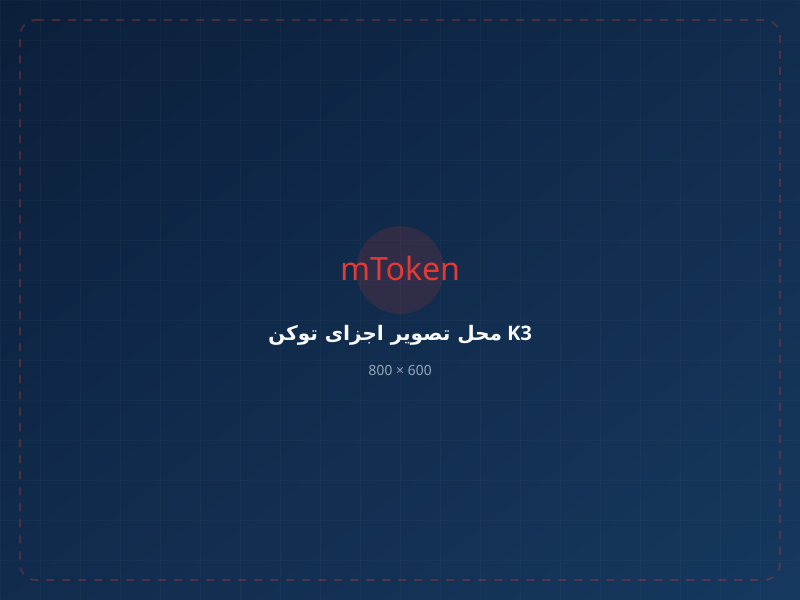

جامع تجارت
سامانه جامع تجارت ایران
استفاده از گواهی و امضای دیجیتال برای فرآیندهایی مانند ثبت سفارش خارجی و سایر عملیات مبتنی بر امضای دیجیتال.
راهنمای سامانه ←mToken K3 یک توکن USB حرفهای مبتنی بر فناوری PKI است که برای نگهداری امن کلید خصوصی و استفاده از گواهیهای دیجیتال در سامانههای مختلف امضای دیجیتال طراحی شده است. امنیت سختافزاری، عملکرد مناسب و تجربه کاربری آسان، این مدل را به گزینهای کاربردی برای استفادههای شخصی، تجاری و سازمانی تبدیل کرده است.


mToken K3 برای کاربرانی طراحی شده است که به یک توکن امضای دیجیتال حرفهای برای استفاده در سامانههای مبتنی بر گواهی دیجیتال نیاز دارند.

کلید خصوصی در محیط امن تراشه توکن نگهداری میشود و برای انجام عملیات رمزنگاری در اختیار محیط خارج از توکن قرار نمیگیرد.
mToken K3 با پشتیبانی از استانداردهای رایج مانند PKCS#11 و Microsoft CAPI، برای استفاده در طیف متنوعی از محیطهای مبتنی بر امضای دیجیتال طراحی شده است.
ترکیبی از امنیت سختافزاری، عملکرد مناسب و قابلیت استفاده در محیطهای مختلف گواهی دیجیتال.

استفاده از پردازنده هوشمند برای انجام عملیات امنیتی و رمزنگاری درون توکن.
طراحی شده برای تجربه اتصال و شناسایی آسان در محیطهای سازگار.
امکان نگهداری چندین گواهی دیجیتال در یک توکن، متناسب با نیاز و ساختار گواهیهای مورد استفاده.
طراحی سختافزاری مناسب برای انجام عملیات احراز هویت و امضای دیجیتال.
کلید خصوصی در محیط امن تراشه نگهداری میشود و امکان استخراج مستقیم آن وجود ندارد.
مناسب برای محیطهایی که از زیرساخت کلید عمومی و گواهیهای دیجیتال استفاده میکنند.
ساختار mToken K3 به گونهای طراحی شده که در کنار امکانات امنیتی و رمزنگاری، تجربه استفاده از توکن برای کاربر نهایی نیز تا حد امکان روان باشد.
بخش مهمی از امنیت گواهی دیجیتال به حفاظت از کلید خصوصی وابسته است؛ mToken K3 این بخش را در سطح سختافزار مدیریت میکند.
کلید خصوصی در محیط امن تراشه قرار دارد و برای استفاده از عملیات امضای دیجیتال در خارج از توکن قابل استخراج نیست.
دسترسی به عملیات امنیتی توکن با استفاده از سازوکار احراز هویت PIN محافظت میشود.
ساختار توکن برای استفاده با گواهیهای دیجیتال، کلیدهای رمزنگاری و سامانههای مبتنی بر PKI طراحی شده است.
توکن mToken K3 برای استفاده در سامانههای مبتنی بر امضای دیجیتال و گواهی الکترونیکی کاربرد دارد و در سامانههای مختلف دولتی، مالی، تجاری و سازمانی مورد استفاده قرار میگیرد.

استفاده از گواهی و امضای دیجیتال برای فرآیندهایی مانند ثبت سفارش خارجی و سایر عملیات مبتنی بر امضای دیجیتال.
راهنمای سامانه ←استفاده از توکن و گواهی دیجیتال در محیطهای بانکی مانند سامانه بانکداری اینترنتی و عملیات نیازمند احراز هویت و امضای دیجیتال.

شرکت در مناقصه و مزایده، ثبتنام بهعنوان تأمینکننده و امضای اسناد و فرآیندهای الکترونیکی سامانه ستاد.
راهنمای سامانه ←
استفاده از توکن و گواهی دیجیتال در فرآیندهای الکترونیکی مرتبط با خدمات حملونقل، از جمله صدور بارنامه.

استفاده از زیرساخت گواهی دیجیتال برای فرآیندهایی مانند تولید CSR، کلید عمومی و دریافت شناسه یکتا مالیاتی، متناسب با الزامات فرآیند مربوطه.

mToken K3 برای استفاده در فرآیندهای صدور و تمدید گواهی امضای دیجیتال مبتنی بر زیرساخت GICA کاربرد دارد.
در صورت تمایل، میتوانید از خدمات VIP دریافت و پیگیری گواهی امضای دیجیتال استفاده کنید.
مشخصات اصلی سختافزاری و نرمافزاری mToken K3
| مدل | mToken K3 |
|---|---|
| نوع محصول | توکن USB امضای دیجیتال و احراز هویت |
| پردازنده | پردازنده هوشمند ۳۲ بیتی |
| رابط اتصال | USB |
| امنیت سختافزاری | EAL4+ |
| ذخیرهسازی گواهی | امکان نگهداری چند گواهی دیجیتال؛ بیش از ۱۰ گواهی در ساختار معرفیشده محصول |
| حافظه امن | 64K حافظه امن روی تراشه |
| استانداردهای نرمافزاری | PKCS#11 v2.2 و Microsoft CAPI |
| الگوریتمهای رمزنگاری | RSA، DES، 3DES، AES، SHA-256، SHA-384، SHA-512 و MD5 |
| احراز هویت | PIN و قابلیتهای احراز هویت دومرحلهای متناسب با محیط استفاده |
| کلید خصوصی | نگهداری در تراشه و غیرقابل استخراج |
| سیستمعاملهای پشتیبانیشده | Windows، Linux و macOS |
| وزن | حدود ۸ گرم |
| ابعاد | حدود 56 × 17 × 8 میلیمتر |
اگر فقط به توکن امضای دیجیتال نیاز دارید، میتوانید mToken K3 را مستقیماً سفارش دهید.
یک انتخاب حرفهای برای نگهداری امن کلید خصوصی و استفاده از گواهی دیجیتال در سامانههای مختلف.
مشاهده و خرید K3 ←